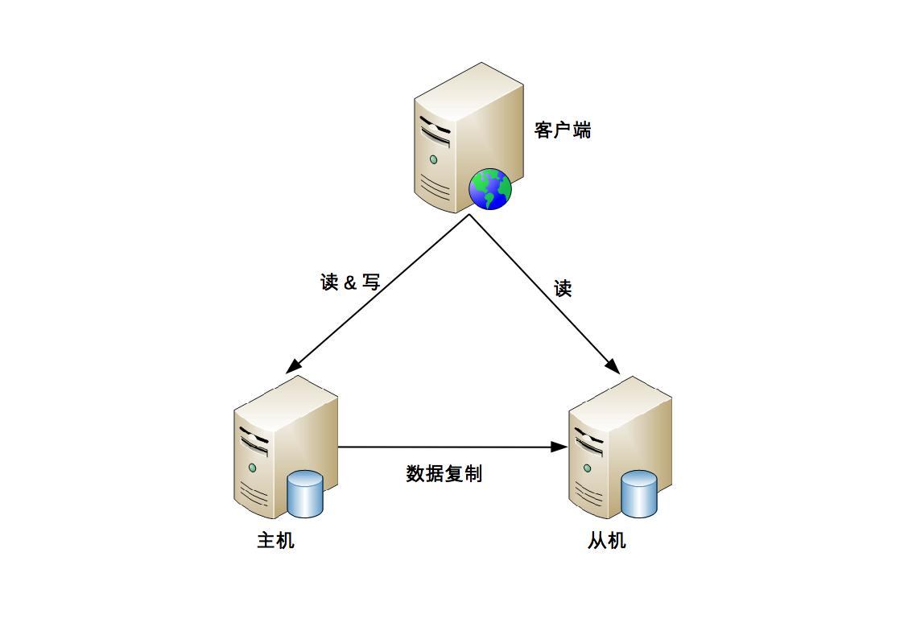
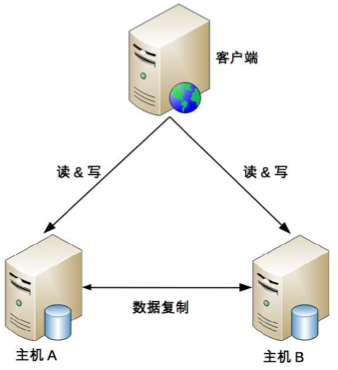
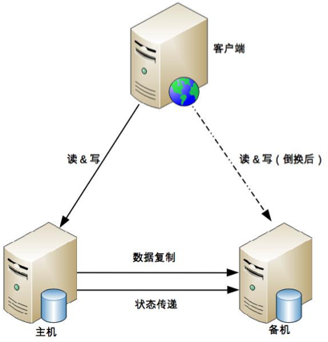
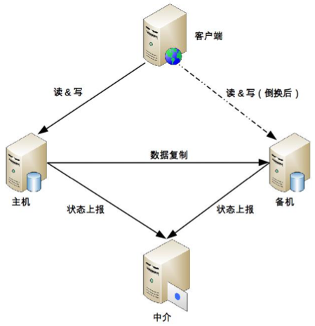
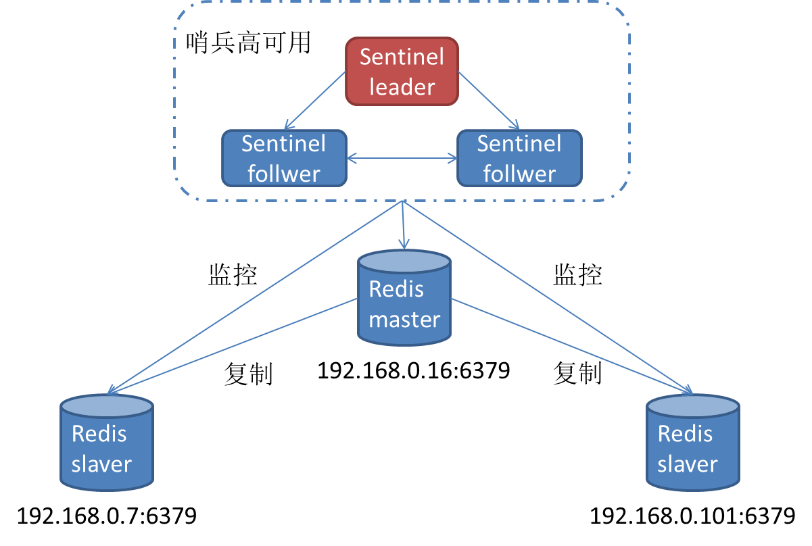
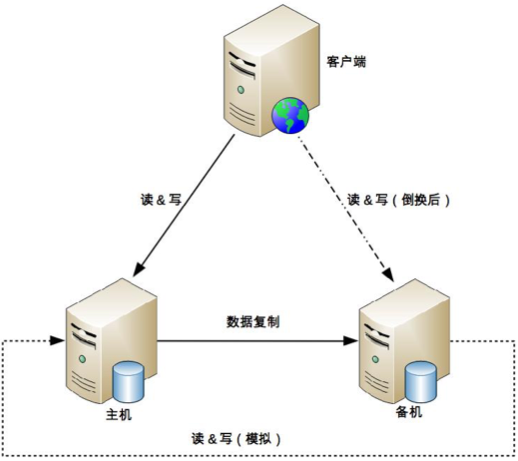

分布式基础（十九）——分布式理论之高可用：Master-Slave
一、引言
分布式系统通常由大量异构的节点和网络组成，节点随时可能crash，网络也随时可能出现延迟、丢包、分区。相比集中式应用，分布式系统放大了出故障的概率，因此分布式系统的其中一个实现目标就是高可用，高可用意味着系统必须具有较强的容错性，即在部分节点故障的情况下仍然能正常对外提供服务。
分布式系统实现高可用的方式有很多，常见的主要有以下几种：
- Master-Slave（包括主备、主从、主主）
- 集群
- 熔断
- 降级
- 限流
Master-Slave、集群的本质都是冗余。熔断、降级、限流则从另一个维度——系统内部的功能可用性，去考虑高可用的设计。本文先从最基础的开始，介绍Master-Slave这类双机架构的高可用实现方式。
高可用一般分为存储高可用和计算高可用，针对存储高可用，这里的冗余指数据冗余，对于计算高可用，指的是计算能力的冗余。本文的讨论主要针对存储高可用，计算高可用可类比理解。
1.1 复杂性
存储高可用，都是通过将数据复制到多个存储设备来实现的，其复杂性主要来源与以下几点：
- 数据如何复制？
- 如何应对复制延迟？
- 如何应对复制中断（网络抖动、分区）？
- 各个节点的职责是什么？
本系列后面所要介绍的主备、主从、主主、集群，都是围绕上面四点展开的。
二、主备
主备复制，是最常见也最简单的一种存储高可用方案，几乎所有的存储系统都提供了主备复制的功能，例如MySQL、Redis、MongoDB等。
2.1 基本实现
主备模式下，只有主机提供读写服务，备机冗余不承担实际的业务读写操作，仅作故障转移用，如果要把备机改为主机，需要人工操作。

2.2 优缺点
优点：
- 客户端不需要感知备机的存在，即使灾难恢复后，备机被人工修改为主机，对于客户端来说，只是认为主机的地址换了而已，无须知道是原来的备机升级为主机；
- 对于主机和备机来说，双方只需要进行数据复制即可，无须进行状态判断和主备切换这类复杂的操作。
缺点：
- 备机仅作备份，并没有提供读写操作，硬件成本上有浪费；
- 故障后需要人工干预，无法自动恢复。
2.3 适用场景
内部的后台管理系统，例如学生管理系统、员工管理系统、假期管理系统等，因为这类系统的数据变更频率低，即使在某些场景下丢失数据，也可以通过人工的方式补全。
三、主从
3.1 基本实现
主从复制下，主机负责读写操作，从机只负责读操作，不负责写操作。

3.2 优缺点
优点：
- 主从模式下，主机故障时，读操作相关的业务可以由从机继续提供；
- 相对主备模式，从机可提供读操作，提升了资源利用率。
缺点：
- 客户端需要感知主从关系，并将不同的操作发给不同的机器进行处理，复杂度比主备模式要高；
- 从机提供读业务，如果主从复制延迟比较大，会出现数据不一致问题；
- 故障时需要人工干预。
3.3 适用场景
一般情况下，读多写少的业务使用主从复制的存储架构比较多。例如，BBS、社交网站、新闻媒体网站这类业务，此类业务的读操作数量是写操作数量的10倍甚至100倍以上。
四、主主
4.1 基本实现
主主模式下，两台机器都是主机，互相将数据复制给对方，客户端将任选一台进行读写操作。

4.2 优缺点
优点：
- 主主模式下，两台都是主机，故障时不需要人工切换；
- 客户端无须区分不同角色的主机，随便将读写操作发送给哪台机器都可以。
缺点：
- 主主模式下，必须保证数据能够双向复制，事实上很多数据是不能双向复制的：如用户注册后生成的用户ID必须限定全局唯一性，同一商品库存不能重复扣减等；
4.3 适用场景
主主模式对数据的设计有严格的要求，一般适合于那些临时性、可丢失、可覆盖的数据场景。例如，用户行为的日志数据（可以丢失）、论坛的草稿数据（可以丢失）等。
五、双机切换
主备模式和主从模式下，都存在两个共性的问题：
- 主机故障后，无法进行写操作；
- 如果主机无法恢复，需要人工介入处理。
双机切换就是为了解决这两个问题而产生的，要实现一个完善的切换方案，必须考虑以下几个关键的设计点：
- 如何判断主备机的状态？
- 检测到主机故障后，执行何种切换策略（包括切换时机、自动化程度、备机升级等）？
- 原故障主机恢复后，新旧主机之间可能存在数据冲突，如何解决？
常见的双机切换模式有三种形式：互连式、中介式和模拟式。
5.1 互连式
故名思议，互连式就是指主备机之间直接建立状态传递的渠道：

以主备模式为例，可以看到，主机和备机多了一个“状态传递”的通道，这个通道就是用来传递状态信息的。这个通道的具体实现可以有很多方式，比如网络连接（各开一个端口）、非网络连接（用串口线连接）、复用数据复制通道等等；
另外，互连式模式下，为了切换后不影响客户端的访问，主机和备机之间通常共享一个对客户端来说唯一的地址，例如虚拟IP，主机需要绑定这个虚拟的IP；或者客户端同时记录主/备机的地址，哪个能访问就访问哪个，只不过备机虽然能收到客户端的操作请求，但是会直接拒绝。
缺点：
如果状态传递的通道本身有故障（例如，网络抖动），那么备机会认为主机故障了从而将自己升级为主机，而此时主机并没有故障，最终就可能出现两个主机；
5.2 中介式
中介式是目前最常用的双机切换方案，在主备两者之外引入第三方中介，主备机之间不直接连接，而是都去连接中介，并且通过中介来传递状态信息：

采用中介式后，主备机都只需要把状态信息发送给中介，或者从中介获取对方的状态信息。无论是发送还是获取，主备机都是作为中介的客户端去操作，复杂度会降低。比如Redis的哨兵模式就是典型的中介式例子：

许多开源框架，比如Keepalived、ZooKeeper，都可以作为中介，并且可以通过选举算法来保证自身的高可用。
5.3 模拟式
模拟式指主/备机之间并不传递任何状态数据，而是备机模拟成一个客户端，向主机发起模拟的读写操作，根据读写操作的响应情况来判断主机的状态。其基本架构如下：

模拟式省去了状态传递通道的建立和管理工作，备机通过模拟的读写操作来探测主机的状态，然后根据读写操作的响应情况来进行状态决策。
模拟式读写操作获取的状态信息只有响应信息（例如，HTTP 404，超时、响应时间超过3秒等），没有互连式那样多样（除了响应信息，还可以包含CPU负载、I/O负载、吞吐量、响应时间等），基于有限的状态来做状态决策，可能出现偏差。
六、总结
Master-Slave模式是比较常见的高可用架构设计模式，其核心是双机切换操作。后续在集群模式中我们还会详细介绍。